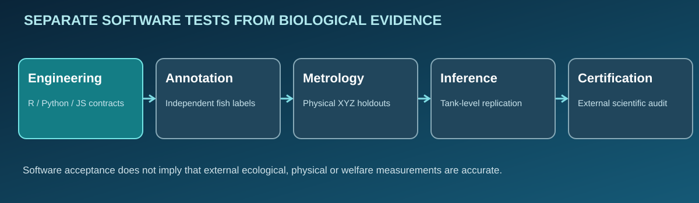

Validation methods and independent benchmarks
Source:vignettes/articles/validation-and-benchmarks.Rmd
validation-and-benchmarks.RmdScientific validation
AquaTrajectories provides the machinery for testing predictions, but test code alone is not evidence that a detector, tracker, measurement device or biological interpretation is accurate.

The steps depict evidence requirements, not certification status.
Detection measures
When matching declared detector boxes against independently reviewed reference boxes, common metrics are:
Intersection-over-Union is measured on matched boxes. AP/mAP summarize precision across confidence-ranked predictions under a specified IoU and class protocol.
Entry points: aqt_box_iou(), aqt_detection_match(),
aqt_detection_metrics(),
aqt_detection_ap(),
aqt_detection_map().
Native AP implementations should not be described as a complete COCO benchmark without matching official semantics.
Tracking measures
Tracking evaluation additionally requires temporal identity reference
labels. aqt_tracking_match()
and aqt_tracking_metrics()
provide identity-based diagnostics; aqt_video_bundle_benchmark()
reports compatible frame and scope denominators.
The official HOTA/TrackEval protocols and the native R tracking summaries are not interchangeable. Track IDs inherited from detector output do not constitute independent reference identities.
Physical stereo target evaluation
A real underwater benchmark needs surveyed physical coordinates, consistent units, independent calibration trials, and disjoint target assemblies for fitting versus holdout. Analyze reconstructed error and failure rates by depth, not only averages.
aqt_stereo_landmark_benchmark()
and aqt_target_holdout_benchmark()
report 3D errors for supplied physical targets.
Beware of leakage
- Distinct frames from one video are not necessarily independent test samples.
- Annotations corrected while viewing predictions may create model-assisted reference agreement.
- Calibration and test targets must not overlap.
- Source-only results on a published clip do not imply species- or site-wide generalization.
- Synthetic tests detect engineering errors but cannot validate live welfare outcomes.
Current scientific release qualification
The software release contains an explicitly fail-closed scientific gate. Do not claim that independent fish identity, physical underwater metrology, real device safety or welfare effects have passed that gate.
Protocols: source protocol, source protocol, source protocol.
For status language suitable for citing the package, use the scientific status page.